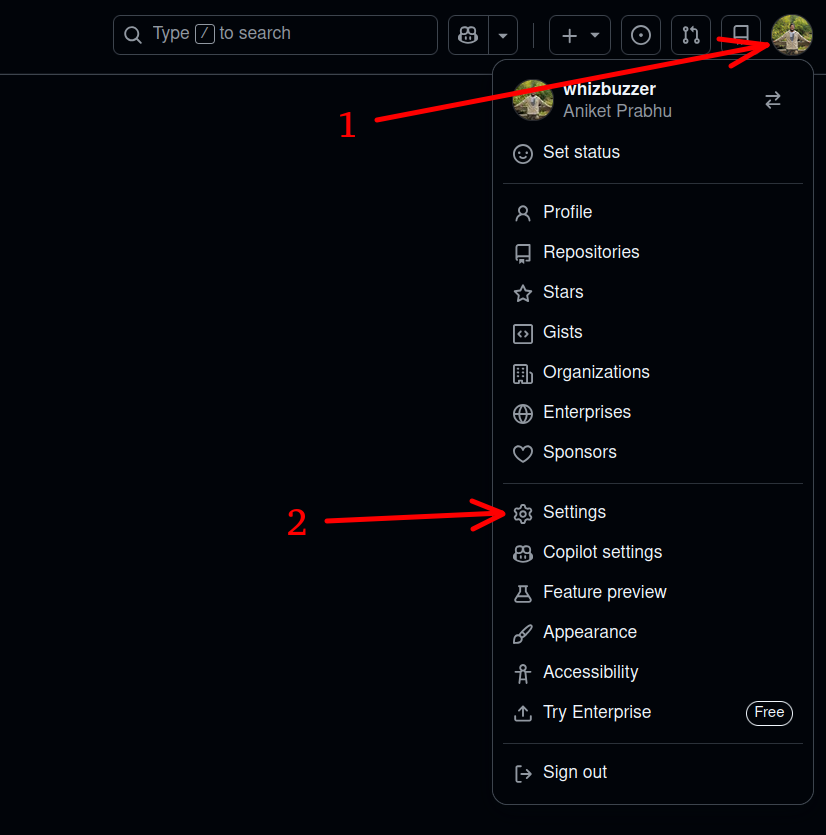
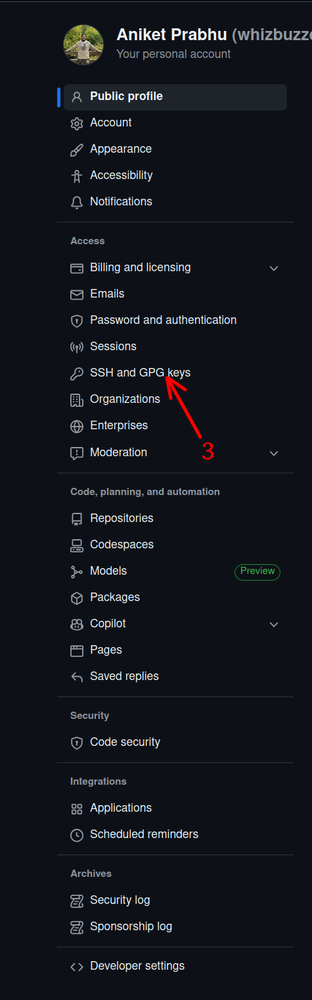
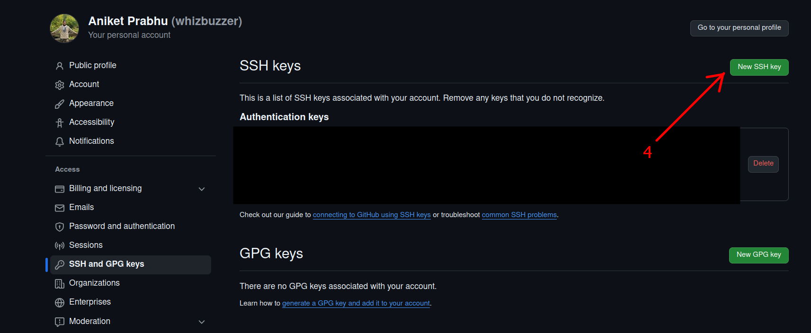
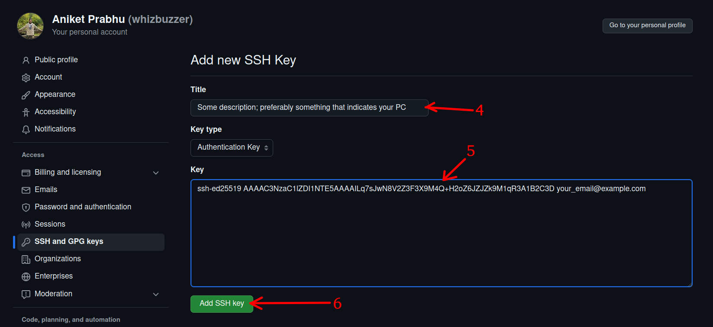
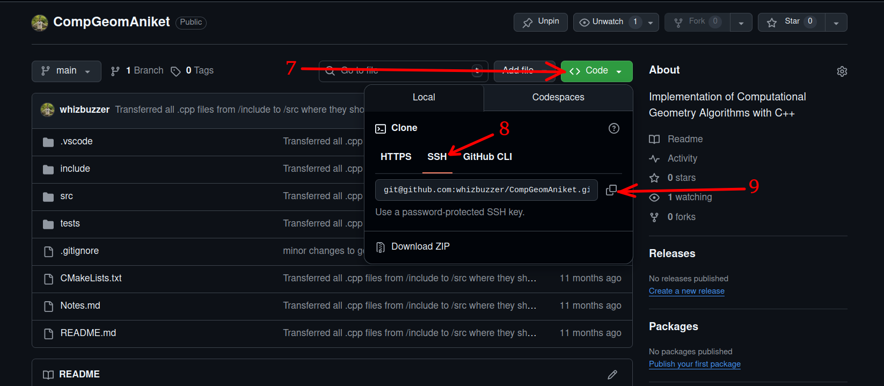

Setting up Github in your PC with SSH
Introduction
In order to move away from using the GitHub Desktop crutch and feel more like a developer I tried doing things through the command line, but it cost me my hair. This is because according to GitHub's blog post [1], Git no longer accepts account passwords for authenticating Git operations. Instead, you need to use either of these methods:
- personal access token (PAT)
- SSH keys
And to add to the frustration, doing git clone will troll you by asking for your username and password, only to tell you that

Therefore, I have made this guide so that others may avoid the stress that I went through for this silly little problem. In this guide, I will walk you through setting up SSH keys for GitHub on your PC so that you too can use git operations through your terminal and at least feel like a software developer.
SSH vs Personal Access Token (PAT)
SSH keys are more secure and convenient for frequent Git operations, while PATs are simpler to set up but less secure.
Steps
Step 1: Check for existing SSH keys
First, check if you already have SSH keys on your computer. Open your terminal (Command Prompt, PowerShell, or Git Bash) and run:
ls -al ~/.ssh
If you see a file named id_rsa and id_rsa.pub OR id_ed25519 and id_ed25519.pub, you already have an SSH key pair. Like this:
rando@randos-pc:~/project_directory/$ ls ~/.ssh
id_ed25519 id_ed25519.pub known_hosts known_hosts.old
Here, id_ed25519 is the private key (WHICH YOU DO NOT GIVE TO ANYBODY!!!), id_ed25519.pub is the public key, known_hosts is a file where SSH stores trusted server host keys (for example, GitHub), and known_hosts.old is a file An automatic backup created when SSH updates or changes entries in known_hosts.
In my case, I used the Ed25519 key algorithm for SSH key generation. If you don't have these files, proceed to Step 2 to generate a new SSH private-public key pair.
RSA vs Ed25519
Ed25519 (Curve25519) is newer, faster, and uses shorter keys; RSA is older and kept for compatibility with systems that don’t support Ed25519.
- Ed25519: Best choice for new SSH keys unless a system forbids it.
- RSA: Choose if you must support legacy services or hardware.
Step 2: Generate a new SSH key
To generate a new SSH key pair, run the following command, replacing "your_email@example.com" with the email address that you are using for Github. -t Indicates the type of cryptographic algorithm you are using to generate the key, and -C adds a label to the key with your email address:
rando@randos-pc:~/project_directory/$ ssh-keygen -t ed25519 -C "your_email@example.com"
When prompted to "Enter a file in which to save the key," press Enter to accept the default file location (Don't try to fix what isn't broken nomally).
Next, you'll be prompted to enter a passphrase. You can choose to enter a passphrase for added security or leave it empty for no passphrase and press Enter:
Generating public/private ed25519 key pair.
Enter file in which to save the key (/home/rando/.ssh/id_ed25519):
Enter passphrase (empty for no passphrase):
Enter same passphrase again:Then you should see something like this:
Your identification has been saved in /home/user/.ssh/id_ed25519
Your public key has been saved in /home/user/.ssh/id_ed25519.pub
The key fingerprint is:
SHA256:3kX9GmFQkZPpZJc3H6z0x2M7Y8A1N0ZqL2Kx9eA1B2C your_email_or_descriptive_label
The key's randomart image is:
+--[ED25519 256]--+
| .o.. . |
|o .+o+ |
| .+O+o |
| +B*+ |
| .oS* |
| . o |
| |
| |
+----[SHA256]----+Step 3: Add your SSH key to the GitHub account
After generating your SSH key, you need to add it to your GitHub account. For this execute cat ~/.ssh/id_ed25519.pub command. This will display the PUBLIC key that you need to add to your github account. The output of this command will look something like this:
ssh-ed25519 AAAAC3NzaC1lZDI1NTE5AAAAILq7sJwN8V2Z3F3X9M4Q+H2oZ6JZJZk9M1qR3A1B2C3D your_email@example.com
In this the first part, ssh-ed25519 is your cryptography algorithm for the key generation, the second part starting with AAAAC3NzaC1lZDI1NTE5AAAAI... is your actual public key, and the last part is your email address (which you set up with the -C flag earlier).
Copy this entire console output line and then proceed to the following steps:
- Go to your Github page, and click on your profile picture in the top right corner. In the drop down, click on Settings. 
- Click on SSH and GPG keys: 
- Click on New SSH key: 
- In the Title field, add a descriptive label for the new key.
In the Key field, paste your console output line that you copied earlier.
Then, click on Add SSH key to save the new key to your GitHub account.
You may be prompted to enter your GitHub password to confirm the addition of the new SSH key.  You should now see a confirmation message indicating that your SSH key has been successfully added to your GitHub account.
Step 4: Testing the SSH connection
After this, we test the SSH connection by executing this command in the terminal:
rando@randos-pc:~/project_directory/$ ssh -T git@github.comThe authenticity of host 'github.com (140.82.113.4)' can't be established.
ED25519 key fingerprint is SHA256:nThbg6kXUpJWGl7E1IGOCspRomTxdCARLviKw6E5SY8.
This key is not known by any other names.
Are you sure you want to continue connecting (yes/no/[fingerprint])?Hi <github_username>! You've successfully authenticated, but GitHub does not provide shell access.
At this point, you can just go to your github repo, click on the green Code button, select SSH, copy the SSH URL, and use it with git clone command in your like this:

Then, execute this in the terminal:
rando@randos-pc:~/directory_where_you_want_to_clone/$ git clone <link_that_you_just_copied>
-Aniket N. Prabhu
1/4/2026
References
- GitHub, Token authentication requirements for Git operations, GitHub Blog, July 26, 2021. Available: https://github.blog/security/application-security/token-authentication-requirements-for-git-operations/
- Oracle, Working with the known_hosts file, Oracle Linux OpenSSH Documentation. Available: https://docs.oracle.com/en/operating-systems/oracle-linux/openssh/openssh-WorkingWithknownhosts.html